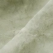
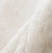
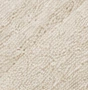
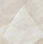
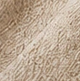

Materials
Manage your materials, samples, and documentation.






Bacterial Cellulose
DraftA lightweight, biodegradable material made from bacterial cellulose with a smooth, soft handfeel.
- Composition
- 100% bacterial cellulose 1
- Weight
- 120 gsm 1
- Width
- 145 cm 1
- Thickness
- 0.3 mm 2
- Heat tolerance
- Max. 60°C 2
- Supplier
- Modern Synthesis —
- MOQ
- 1,000 metres 1
- Lead time
- 4–6 weeks 1
Colour options, care instructions, environmental
certifications, and more.
Add a new material
Upload existing documentation and let Filo extract the key information.
- Technical datasheet.pdf2.4 MB
- Lab test report.pdf1.8 MB
- OEKO-TEX certificate.pdf1.2 MB
- Material photos.zip12 MB
 Technical datasheet.pdf2.4 MBDatasheet
Technical datasheet.pdf2.4 MBDatasheet Lab test report.pdf1.8 MBTest report
Lab test report.pdf1.8 MBTest report OEKO-TEX certificate.pdf1.2 MBCertification
OEKO-TEX certificate.pdf1.2 MBCertification Material photos.zip12 MBImages
Material photos.zip12 MBImages
Filo will extract key information from your documents. You can review and edit everything before publishing.
Extracting information
Filo is reading your documents and creating a draft material record. This usually takes a few seconds.
Bacterial Cellulose
DraftA lightweight, biodegradable material made from bacterial cellulose with a smooth, soft handfeel.
- Composition
- 100% bacterial cellulose 1
- Weight
- 120 gsm 1
- Width
- 145 cm 1
- Thickness
- 0.3 mm 2
- Heat tolerance
- Max. 60°C 2
- Supplier
- Modern Synthesis —
- MOQ
- 1,000 metres 1
- Lead time
- 4–6 weeks 1
Colour options, care instructions, environmental certifications, and more.
- Technical datasheet.pdf2.4 MBProcessing
- Lab test report.pdf1.8 MBProcessing
- OEKO-TEX certificate.pdf1.2 MBProcessing
- Material photos.zip12 MBProcessing
You can review, edit or remove any information before publishing.
Bacterial Cellulose
Ready to publishReview the extracted information, edit if needed, and add any missing details before publishing.
Key properties extracted from your documents. You can edit any field.
- Composition
- 100% bacterial cellulose Technical datasheet.pdfp. 2
- Weight
- 120gsm Technical datasheet.pdfp. 3
- Width
- 145cm Technical datasheet.pdfp. 3
- Thickness
- 0.3mm Lab test report.pdfp. 1
- Heat tolerance
- Max. 60°C Lab test report.pdfp. 4
- Supplier
- Modern Synthesis Technical datasheet.pdfp. 1
- MOQ
- 1,000metres Technical datasheet.pdfp. 5
- Lead time
- 4–6weeks Technical datasheet.pdfp. 5
Colour options, care instructions, environmental certifications, and more.
Bacterial Cellulose
Ready to publishA lightweight, biodegradable material made from bacterial cellulose with a smooth, soft handfeel.
- Technical datasheet.pdf2.4 MBDatasheet
- Lab test report.pdf1.8 MBTest report
- OEKO-TEX certificate.pdf1.2 MBCertification
- Material photos.zip12 MBImages